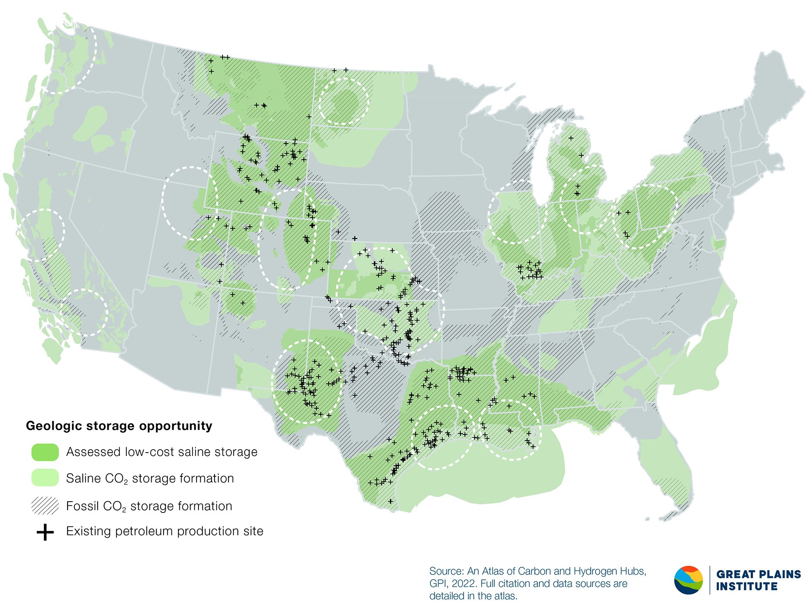
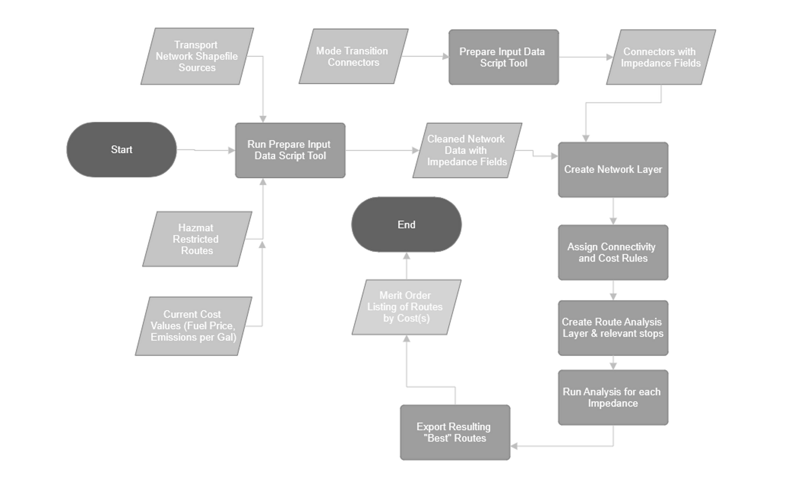
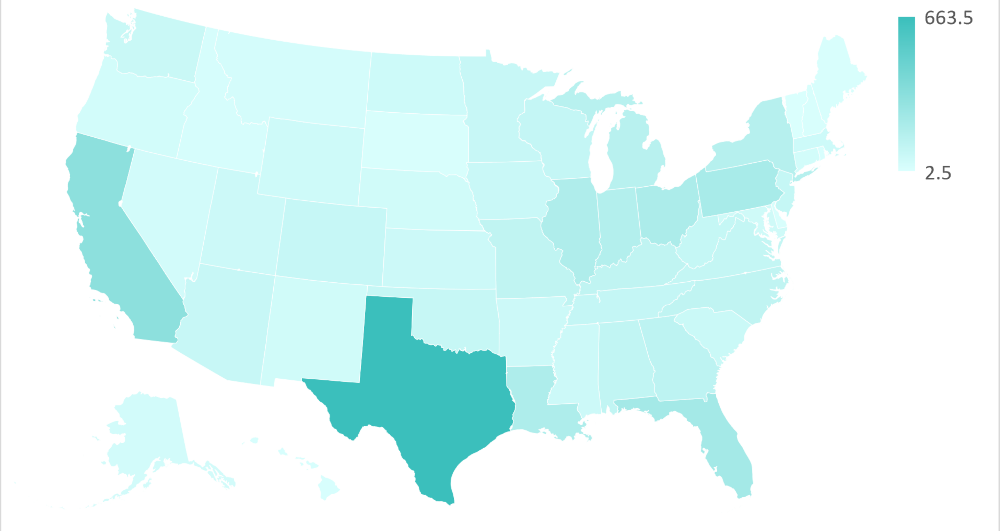
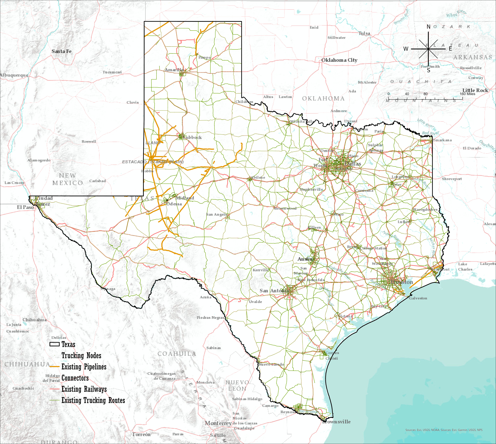
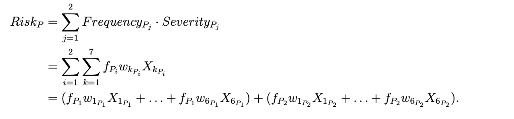

CPLN 6800 GIS Capstone: CO2 Transportation
A Case Study on Texas State
Introduction
We seek to understand how feasible multimodal transport routes are in optimizing for minimal monetary costs and minimal social and environmental risk for CO2 Transportation.

Methodology
Our main workflow is to develop and calculate the risk and cost constraints of each road/link segment of our network, and optimize based on the constraints to minimize cost & risk.

Study Area Selection
Why Texas? According to the Energy Information Administration (EIA), Texas State emits the most CO2 across all states, over 600 million tons, far more than any other state in the US. This is due to the state’s numerous heavy industries including oil and gas refineries, dense population, and well-developed infrastructure and transportation system.

Visual Transport Modes Networks in Texas
Here, we can visualize the different transport modes considered in this study:
Our multimodal transportation network with connector built is shown below: 
Risk Analysis
Risk Model for Pipelines are shown below.

X1Pi is the average amount of fatalities per incident for accident type Pi
X2Pi is the average amount of injuries per incident for accident type Pi
X3Pi is the distance from the location on the pipeline with the highest probability of an incident to the closest hospital in meters
X4Pi is the average amount of CO2 released per incident for pipeline type Pi
X5Pi is the total population in a radius of 5 km of the pipeline
X6Pi is the total number of kilometers a pipeline traverses vulnerable land
Further inputs are needed to complete this project.